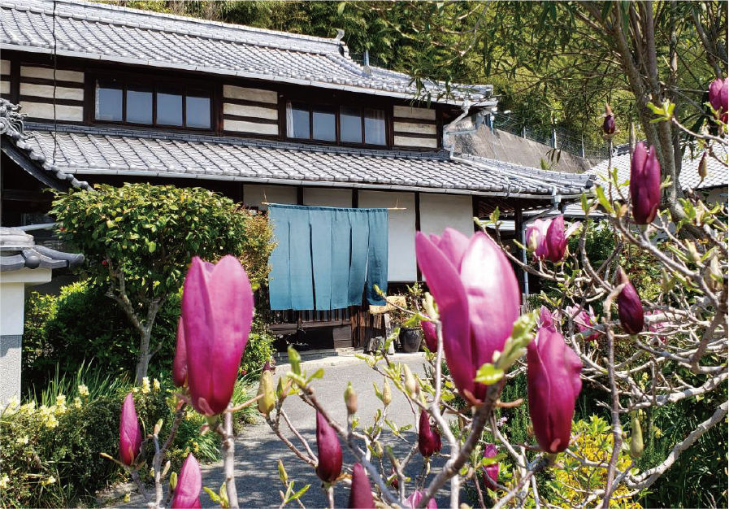
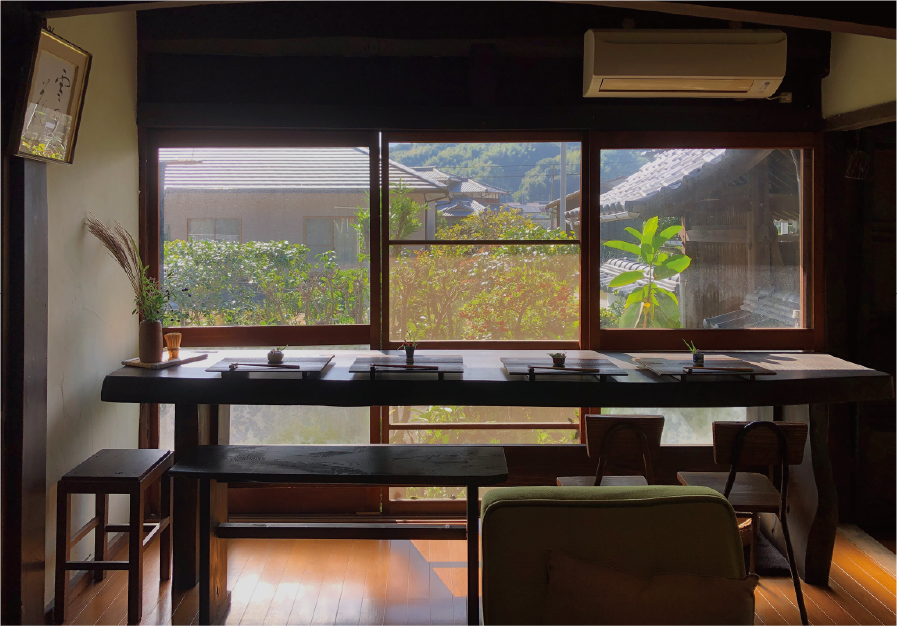
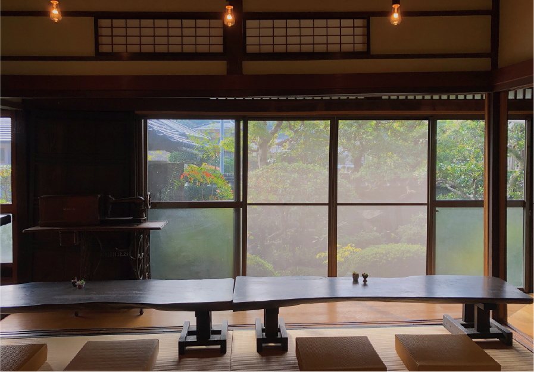
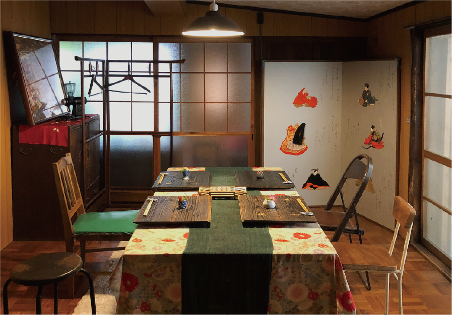

な野屋
人口約5000人の菊間町。昔はこの町にも沢山の人と商業施設がありました。
少しでも空き家が利用できるなら…と、2015年、築100年以上の古民家を改装してカフェレストランに。自分達で畑も田んぼもやりながら、地元の旬な食材を使ったココロと身体に優しいお料理を目指しています。
| 住所 | 愛媛県今治市菊間町浜2259 | |
|---|---|---|
| 電話 | 090-8694-0768 | |
| ※座席が限られておりますので、事前にご連絡いただけましたら、安心してご来店頂けます。 | ||
| 営業日 | 【な野屋ランチ】水・木・金・土 | 【限定パスタランチ】第２、第４火曜日 |
| 営業時間 | 【ランチ】11:30 ~ 14:00 (ラストオーダー) |
【ディナー】要予約 |
※店内で、な野屋米、手作り味噌・漬物・惣菜などを販売しております。スタッフにお声かけください。
※サイクルスタンドもご用意しております。
な野屋ランチ
一汁三菜
- 前菜
- 季節のお野菜 三種盛り
- メイン
- シェフのおまかせ主菜
- 小鉢
香物
御飯
汁物
- ドリンク
- デザート
- ミニデザート１種類（3種類の中からお選びください）
３種盛合わせに変更も可能です＋200円になります
- ★ランチ以外のお料理（御前や会食）も対応いたします
お気軽にご相談ください
な野屋ディナー
夜のお食事は予約制です
5名様以上、3日前までにご予約ください。（最大25名様まで）
- 女子会
- お祝い事（お誕生日会、還暦祝いなど）
- 法事（折詰可）
- グループに合わせたメニューをお作りいたします。
- お気軽にお電話ください。
お店の様子

季節によって咲く花々がお客様をお出迎えします

窓際の外が眺められるイスの席から、風情のある季節の花々が眺める事ができます。

風情のある庭園を眺めながら、一枚板のテーブルとたたみ座布団でゆったりランチ
お席に座るとお一人おひとりにかわいいお花がお出迎えします。
店主自ら作るお米や野菜。お店で味わっていただけますし、ご希望でしたらお分けしいたします。

個室（イス席）もあります。
特別な時間をお過ごしください。
アクセス
愛媛県今治市菊間町浜2259